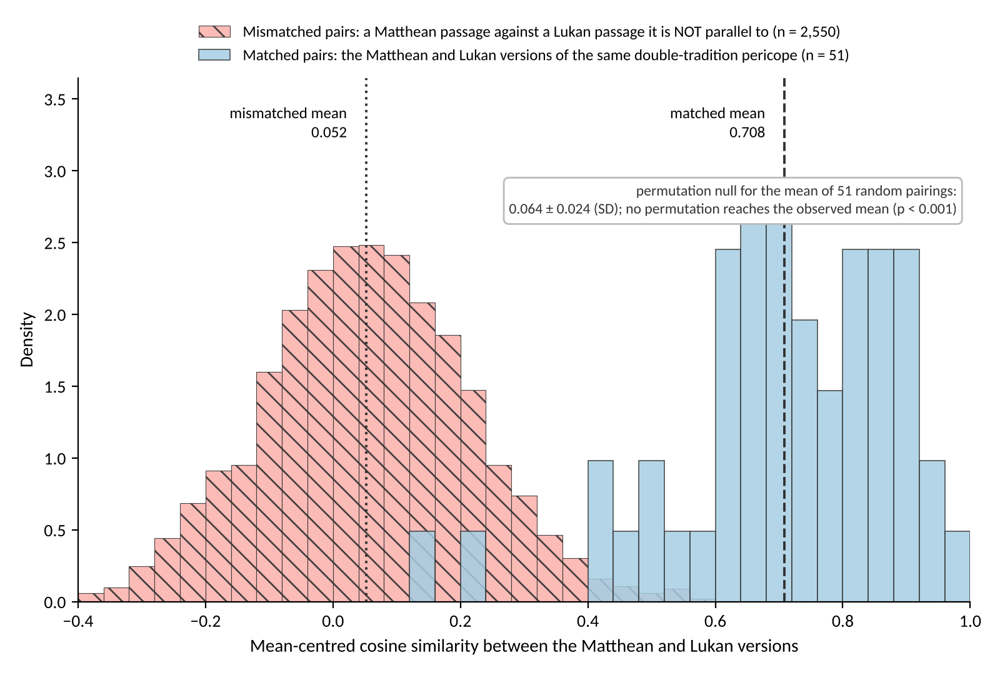
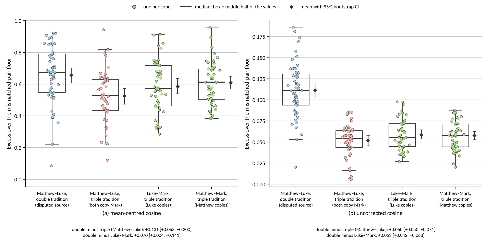
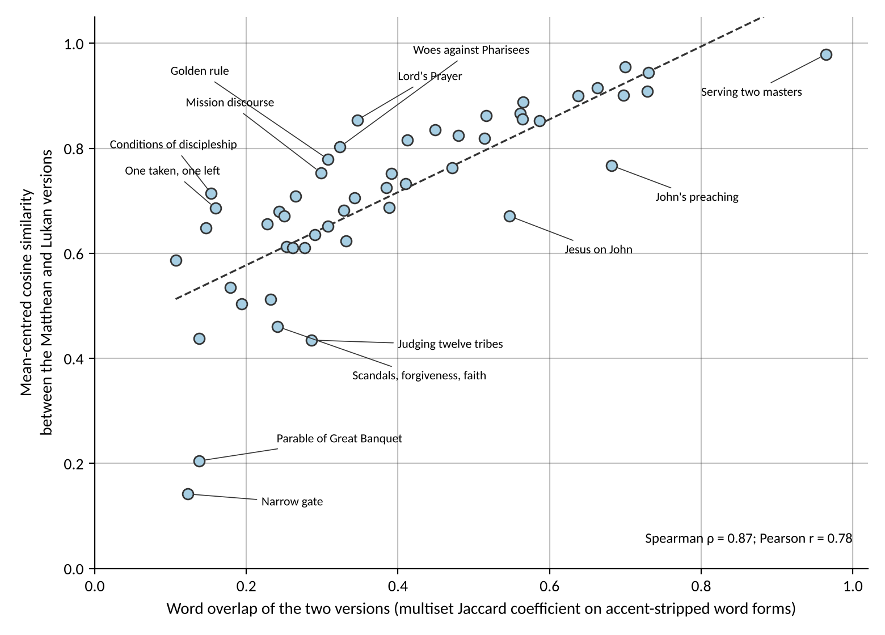
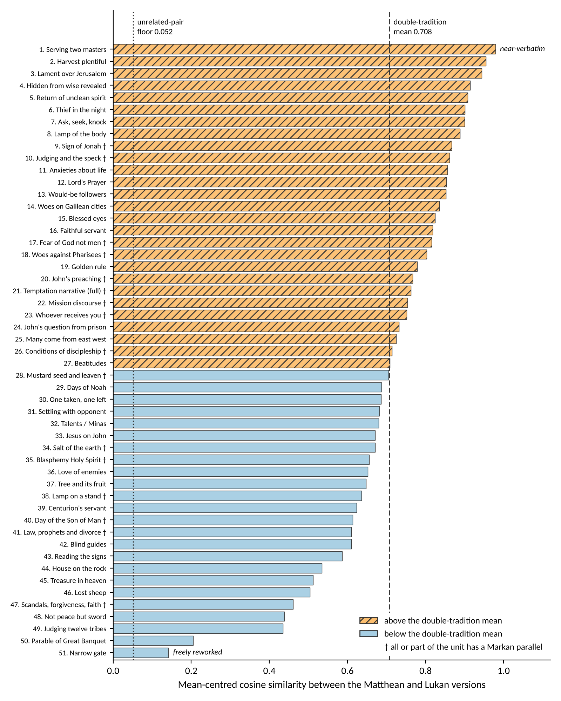
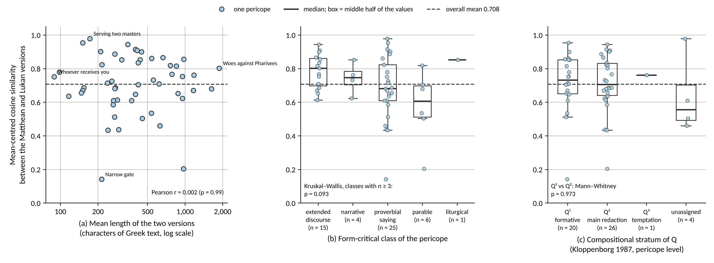

Results
All statistics and figures are computed on the 51 double-tradition and 45 triple-tradition pericopes with range-wise encoding of composite units and the model pinned to Koine-Greek-BERT v1.0.1 (b81172e). Every number is recorded in outputs/reports/ and key_stats*.json.
1. Positive and negative controls
In the triple tradition, where Matthew and Luke both copy Mark, the mean-centred cosine is 0.578 between Matthew and Luke (two independent copies of one source) and 0.679 / 0.651 between Matthew and Mark / Luke and Mark (a copy and its source). Two independent copies agree less with each other than each does with its source, as they should. Mismatched pairs fall to ≈ 0.05 in every set after centring (raw cosine of unrelated passages ≈ 0.84–0.91). The representation passes both controls.
The 51 double-tradition matched pairs average 0.708 (SD 0.175, range 0.142–0.979) against a mismatched floor of 0.052, and exceed four permutation nulls — random 0.064, thematic 0.110, length-matched 0.086, length-and-theme-matched 0.132 — with p < 0.001 in every case. The uncorrected cosine is concordant (0.950 against nulls of 0.841–0.854).

2. Comparing the traditions — excess over each set's own floor
| Set | Excess over mean floor, centred [95% CI] | raw [95% CI] |
|---|---|---|
| Double tradition, Matt–Luke | 0.656 [0.609, 0.702] | 0.112 [0.102, 0.120] |
| Triple tradition, Matt–Luke (two-step copying) | 0.525 [0.475, 0.574] | 0.052 [0.046, 0.058] |
| Triple tradition, Luke–Mark (one-step copying) | 0.586 [0.540, 0.635] | 0.059 [0.054, 0.065] |
| Triple tradition, Matt–Mark (one-step copying) | 0.609 [0.570, 0.650] | 0.058 [0.053, 0.063] |
- Double minus two-step copying: +0.131 [0.063, 0.200] centred, +0.060 [0.050, 0.071] raw — robust: it holds against the nearest-neighbour floor, with the double tradition size-matched, without the 16 Mark–Q overlap units (+0.142), under all six centring vectors, with the last-four-layer encoding, with Ancient-Greek-BERT and with Greek BERT (a Modern Greek model without biblical pre-training: +0.127 [0.061, 0.202]); and it is reproduced by plain word overlap, which involves no pre-training at all.
- Double minus one-step copying (Luke–Mark): +0.053 [0.042, 0.063] raw, but only +0.070 [0.004, 0.141] centred, and not stable across centring vectors or encoders. The safe statement: Matthew and Luke agree in the double tradition at least as closely as Luke agrees with Mark where he copies him.
- Kind of material: the double tradition is mostly sayings, the triple tradition mostly narrative. Against the 11 sayings-dominant triple-tradition units the centred advantage shrinks to +0.077 [−0.061, 0.230], and against Luke–Mark copying of the same units it vanishes (−0.036). In the uncorrected space it persists (+0.060, +0.041). Part of the two-step contrast is a sayings-versus-narrative effect.

3. What the embedding adds to word overlap
Plain word overlap (multiset Jaccard on word forms or on lemmas) and character n-gram TF-IDF reproduce the same ordering (Jaccard excess: double 0.313, two-step 0.167, Luke–Mark 0.214) and most of the ranking (Spearman ρ = 0.87 with the centred cosine). The headline contrast is not specific to the transformer.
What is specific: after regressing the centred cosine on Jaccard over all 2,601 Matthew–Luke pairs, the residual still separates matched pairs (+0.180) from mismatched ones (−0.004), p < 0.001 against all nulls, and the double tradition's advantage survives on the residual when each tradition is fitted on its own pairs (+0.085 [0.021, 0.147]) but not under a fit common to both (−0.089 [−0.151, −0.031]), so that contrast is better credited to word overlap. Lemmas do not remove the residual (+0.262 against −0.005, p < 0.001 against the length-and-theme null); a joint fit on word forms, lemmas and character TF-IDF leaves +0.107 (p = 0.008). Greek BERT, without biblical pre-training, gives a residual of the same size (+0.163), so the increment is not simply the model recalling the gospels — though, unlike the contrast between the traditions, it cannot be shown to be free of all exposure. The pericopes the embedding rates higher than their word overlap predicts are cases of paraphrase — Conditions of Discipleship ("loves … more than me / is not worthy of me" against "does not hate … / cannot be my disciple"), One Taken, One Left, the Golden Rule, the Lord's Prayer.

4. Ranking and covariates
Top 5: Serving Two Masters (0.979), Harvest Plentiful (0.955), Lament over Jerusalem (0.944), Hidden from Wise, Revealed (0.915), Return of Unclean Spirit (0.908). Bottom: Narrow Gate (0.142), Great Banquet (0.205).
- Length: Pearson r = 0.002 (p = 0.99).
- Form: discourse 0.785 > narrative 0.743 > proverbial 0.683 > parable 0.575, but Kruskal–Wallis p = 0.093 and no pairwise difference survives correction — a pattern, not a finding.
- Kloppenborg strata: Q¹ 0.714 vs Q² 0.713 (p = 0.97).
- Goulder set: 0.607 vs 0.733 (p = 0.17, d = −0.75) — underpowered, inconclusive.
- Sentence-level bootstrap: median per-pericope SD 0.117 (mean 0.133, 47 pericopes with ≥ 2 sentences in each version).


5. Shared deviation from Mark (minor agreements)
In the triple tradition, the component of Matthew's vector orthogonal to Mark's correlates with Luke's at 0.364, against 0.058 for mismatched pericopes (random null 0.065, length-matched null 0.063, p < 0.001). Where Matthew and Luke both depart from Mark, they tend to depart in the same direction in the same pericope — the geometric trace of the minor agreements. The geometry cannot say whether this reflects Luke's knowledge of Matthew or coincident redaction.
6. Directionality
ΔR² = +0.024 (Luke from Matthew 0.219 vs Matthew from Luke 0.195; sign-flip p = 0.005) — but penalty-dependent (from +0.057 to 0), absent among the 30 length-balanced pairs (p = 0.38), and the statistic fails the positive control (Mark → Matthew p = 0.62; Mark → Luke p = 0.84). No directional inference is drawn.
Conclusion
The representation can be validated on known dependence, and once validated it measures the double tradition as closer than two-step Markan copying and at least as close as one-step copying, with part of the first contrast due to the kind of material. Most of this is visible in word overlap; the embedding's own contribution is a residual sensitivity to agreement across a change of wording. It does not tell who copied whom.